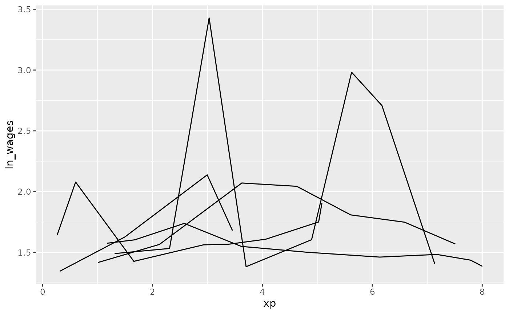

This data contains measurements on hourly wages by years in
the workforce, with education and race as covariates. The population
measured was male high-school dropouts, aged between 14 and 17 years
when first measured. wages is a time series tsibble.
It comes from J. D. Singer and J. B. Willett.
Applied Longitudinal Data Analysis.
Oxford University Press, Oxford, UK, 2003.
https://stats.idre.ucla.edu/stat/r/examples/alda/data/wages_pp.txt
Format
A tsibble data frame with 6402 rows and 8 variables:
- id
1–888, for each subject. This forms the
keyof the data- ln_wages
natural log of wages, adjusted for inflation, to 1990 dollars.
- xp
Experience - the length of time in the workforce (in years). This is treated as the time variable, with t0 for each subject starting on their first day at work. The number of time points and values of time points for each subject can differ. This forms the
indexof the data- ged
when/if a graduate equivalency diploma is obtained.
- xp_since_ged
change in experience since getting a ged (if they get one)
- black
categorical indicator of race = black.
- hispanic
categorical indicator of race = hispanic.
- high_grade
highest grade completed
- unemploy_rate
unemployment rates in the local geographic region at each measurement time
Examples
# show the data
wages
#> # A tsibble: 6,402 x 9 [!]
#> # Key: id [888]
#> id ln_wages xp ged xp_since_ged black hispanic high_grade
#> <int> <dbl> <dbl> <int> <dbl> <int> <int> <int>
#> 1 31 1.49 0.015 1 0.015 0 1 8
#> 2 31 1.43 0.715 1 0.715 0 1 8
#> 3 31 1.47 1.73 1 1.73 0 1 8
#> 4 31 1.75 2.77 1 2.77 0 1 8
#> 5 31 1.93 3.93 1 3.93 0 1 8
#> 6 31 1.71 4.95 1 4.95 0 1 8
#> 7 31 2.09 5.96 1 5.96 0 1 8
#> 8 31 2.13 6.98 1 6.98 0 1 8
#> 9 36 1.98 0.315 1 0.315 0 0 9
#> 10 36 1.80 0.983 1 0.983 0 0 9
#> # ℹ 6,392 more rows
#> # ℹ 1 more variable: unemploy_rate <dbl>
library(ggplot2)
# set seed so that the plots stay the same
set.seed(2019-7-15-1300)
# explore a sample of five individuals
wages %>%
sample_n_keys(size = 5) %>%
ggplot(aes(x = xp,
y = ln_wages,
group = id)) +
geom_line()

# Explore many samples with `facet_sample()`
ggplot(wages,
aes(x = xp,
y = ln_wages,
group = id)) +
geom_line() +
facet_sample()
# explore the five number summary of ln_wages with `features`
wages %>%
features(ln_wages, feat_five_num)
#> # A tibble: 888 × 6
#> id min q25 med q75 max
#> <int> <dbl> <dbl> <dbl> <dbl> <dbl>
#> 1 31 1.43 1.48 1.73 2.02 2.13
#> 2 36 1.80 1.97 2.32 2.59 2.93
#> 3 53 1.54 1.58 1.71 1.89 3.24
#> 4 122 0.763 2.10 2.19 2.46 2.92
#> 5 134 2.00 2.28 2.36 2.79 2.93
#> 6 145 1.48 1.58 1.77 1.89 2.04
#> 7 155 1.54 1.83 2.22 2.44 2.64
#> 8 173 1.56 1.68 2.00 2.05 2.34
#> 9 206 2.03 2.07 2.30 2.45 2.48
#> 10 207 1.58 1.87 2.15 2.26 2.66
#> # ℹ 878 more rows